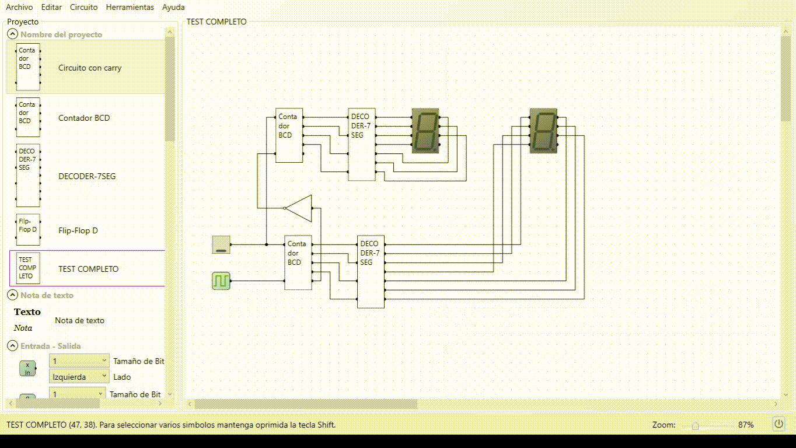

Contador implementado con compuertas lógicas.
El proyecto fue diseñado con el software LogicCircuit para la materia de diseño lógico. El proyecto requería un contador que llegara hasta el número 99 y que se implementara un switch que activara el modo ascendente o descendente dependiendo de su estado. El reto para el desarrollo de este proyecto fue la correcta implementación de las compuertas lógicas y del switch para que funcionara bien tanto en la cuenta descendente como la ascendente. El problema fue que al modificar la cuenta de uno también se modificaba la otra cuenta, haciendo que el contador de decenas no funcionara de manera correcta. El problema se solucionó cambiando la lógica del circuito, de Suma de Productos (SoP) a Producto de Sumas (PoS). La implementación que se pensó para este proyecto fue el crear un sistema con sensores que detectara cuando una persona entra o sale de una habitación, y si la cuenta llega a un determinado número, permitir solo la salida de la habitación, pero no la entrada (por la sana distancia).
Categoría: Electrónica
Palabras clave: Circuito, Diseño Lógico, Compuertas Lógicas, Implementación
Funcionamiento del circuito
